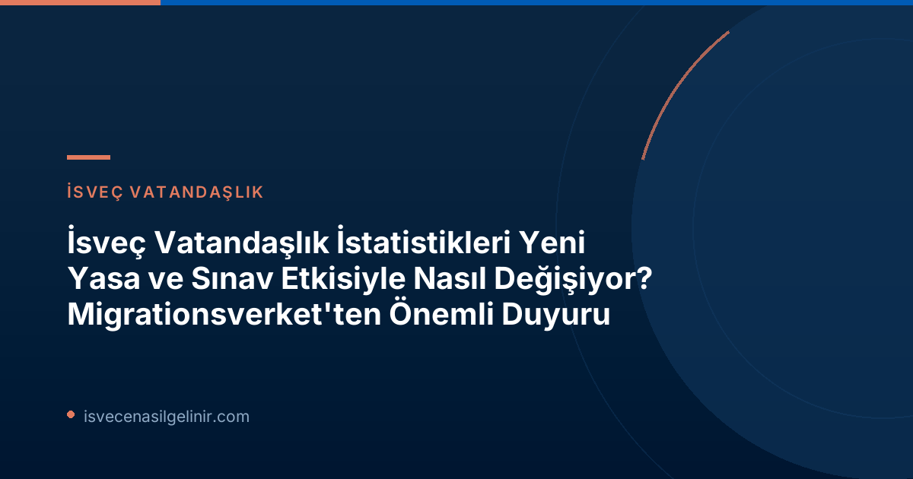

İsveç Vatandaşlık Yasasında Yeni Dönem: Neler Değişti?
İsveç’te 6 Haziran 2026 tarihinde yürürlüğe giren yeni vatandaşlık yasası, İsveç vatandaşı olmak isteyen herkes için önemli değişiklikler getirdi. Bu yeni düzenleme ile birlikte, İsveç vatandaşlığına başvuruların büyük bir çoğunluğu için artık bir vatandaşlık testi zorunluluğu bulunmaktadır. Bu test, İsveç toplumu ve dili hakkında bilgi düzeyini ölçmeyi hedeflemektedir.
İsveç Vatandaşlık Testi Zorunlu Hale Geldi
Yeni yasa uyarınca, İsveç vatandaşı olmak isteyenlerin, İsveç toplumu bilgisi ve İsveç dilini anlama yeteneğini gösteren bir sınavı başarıyla geçmeleri gerekmektedir. Bu, daha önceki dönemlere göre başvuru sürecine eklenen önemli bir şarttır ve başvuru sahiplerinin hazırlıklı olmasını gerektirmektedir.
Vatandaşlık Testleri Başladı: Süreç Nasıl İşiyor?
İsveç vatandaşlık testlerinin ilk aşaması 15 Ağustos 2026 tarihinde gerçekleştirildi. Üniversite ve Yüksek Öğretim Konseyi (UHR) tarafından yürütülen bu testler, kademeli bir şekilde uygulanmaktadır. Başvuru sahiplerinin test öncesinde yeterli bilgi birikimine sahip olması büyük önem taşımaktadır.
İsveç Toplumu Hakkında Sınav: Ağustos 2026
İsveç toplumu hakkındaki testler, Ağustos 2026 itibarıyla uygulanmaya başlamıştır. Bu test, İsveç’in yönetim şekli, tarihi, kültürü ve toplumsal değerleri hakkında temel bilgileri ölçer. Başvuru sahiplerinin bu konularda kapsamlı bilgi sahibi olması beklenmektedir.
İsveç Dili Sınavı: En Erken 2027
İsveç dil bilgisi testi ise, UHR tarafından yapılan açıklamaya göre en erken 2027 yılında uygulanmaya başlanacaktır. Bu testin içeriği ve seviyesi hakkında detaylı bilgiler ilerleyen dönemlerde açıklanacaktır. Dil testi, başvuru sahiplerinin İsveççe anlama, konuşma, okuma ve yazma becerilerini değerlendirecektir.
Önemli Bilgi Kutusu: İsveç Vatandaşlık Testi Detayları
İsveç'te vatandaşlık başvurusunda bulunanların büyük çoğunluğu için 6 Haziran'da yürürlüğe giren yeni yasa ile birlikte vatandaşlık testi zorunlu hale gelmiştir. Bu test, İsveç toplumu ve İsveç dili bilgisi olmak üzere iki ana bölümden oluşmaktadır. İlk testler 15 Ağustos 2026 tarihinde başlamış olup, Universitets-och högskolerådet (UHR) tarafından kademeli olarak uygulanmaktadır. İsveç Toplumu Hakkında Test'in Ağustos 2026'da başlamasına rağmen, İsveç Dili Testi'nin en erken 2027'de uygulanabileceği belirtilmiştir. Test hakkında daha fazla bilgi ve hazırlık kaynakları için sverigemedborgarskapsprov.com adresini ziyaret edebilirsiniz.
Migrationsverket İstatistikleri Neden Dikkatli Yorumlanmalı?
Migrationsverket, vatandaşlık istatistiklerinin mevcut durumda "ihtiyatla" yorumlanması gerektiğini vurgulamaktadır. Bunun temel nedeni, yeni yasa ve test süreçlerinin karar verme mekanizmalarını etkilemesidir.
Sadece Reddedilen Başvurulara Karar Veriliyor
Şu anda, Migrationsverket öncelikli olarak vatandaşlık testi zorunluluğunu karşılamayan veya diğer şartları yerine getirmeyen başvurular hakkında ret kararı vermektedir. Vatandaşlık testlerinin sonuçları henüz açıklanmadığı için, test sonucu bekleyen başvurular hakkında olumlu veya olumsuz bir karar verilememektedir.
Sınav Sonucu Bekleyen Başvurular Askıda
Vatandaşlık testlerine giren ancak sonuçları henüz gelmeyen başvurular, Migrationsverket tarafından karara bağlanamıyor. Bu durum, onaylanacak başvuru sayısında geçici bir düşüşe neden olmakta ve genel istatistikleri etkilemektedir.
Onay Oranlarında Dalgalanma Bekleniyor
Migrationsverket, test sonuçlarının açıklanma zamanına bağlı olarak vatandaşlık onay oranlarında dalgalanmalar yaşanacağını belirtmektedir. Bazı aylarda onaylanan başvuru sayısı düşük seyrederken, test sonuçlarının topluca gelmesiyle birlikte bu oranlarda artışlar görülebilecektir.
Başvuru Sahipleri İçin Ne Anlama Geliyor?
Yeni süreç, İsveç vatandaşlığına başvuran kişiler için belirli sonuçlar doğurmaktadır:
Daha Uzun Bekleme Süreleri
Vatandaşlık testi sonuçlarının beklenmesi gerektiği için, başvuru sahipleri normalden daha uzun bir bekleme süresiyle karşılaşacaklardır. Migrationsverket, bu süreçte sabırlı olunması gerektiğini vurgulamaktadır.
Sınavlara Hazırlıklı Olmak Büyük Önem Taşıyor
Başvuru sahiplerinin, İsveç toplumu ve dili hakkında yapılacak sınavlara yeterince hazırlanmaları gerekmektedir. Bu testler, vatandaşlık başvurusunun onaylanmasında kritik bir rol oynayacaktır.
| Konu | Detay |
|---|---|
| Yeni Yasanın Yürürlüğe Giriş Tarihi | 6 Haziran 2026 |
| İlk Vatandaşlık Testi Tarihi | 15 Ağustos 2026 |
| İsveç Toplumu Testi Başlangıcı | Ağustos 2026 |
| İsveç Dili Testi Başlangıcı (Tahmini) | En Erken 2027 |
| Mevcut Durum | Sınav sonucu bekleyen başvurular askıda, sadece reddedilen başvurular karara bağlanıyor. |
| Başvuru Sahipleri İçin Sonuç | Daha uzun bekleme süreleri |
Sıkça Sorulan Sorular (SSS)
Vatandaşlık başvurum neden uzun sürüyor?
Yeni vatandaşlık yasası kapsamında getirilen sınav zorunluluğu nedeniyle, başvurunuzun sonuçlanması sınav sonuçlarının Migrationsverket'e ulaşmasına bağlıdır. Bu da genel bekleme sürelerini uzatmaktadır.
Kabul edilmeyen başvurulara ne oluyor?
Mevcut durumda, Migrationsverket öncelikle vatandaşlık testi zorunluluğunu karşılamayan veya diğer vatandaşlık kriterlerini sağlamayan başvurular hakkında ret kararları vermektedir. Bu durum, genel istatistiklerde reddedilen başvuru sayısının yükselmesine neden olmaktadır.
İsveç dili testi ne zaman başlayacak?
İsveç dili testi, Üniversite ve Yüksek Öğretim Konseyi (UHR) tarafından yapılan açıklamaya göre en erken 2027 yılında uygulanmaya başlanacaktır.
Sonuç ve Tavsiyeler
Migrationsverket’in bu duyurusu, İsveç vatandaşlığına başvurmak isteyenler için sürecin değişen dinamiklerini anlamanın önemini bir kez daha ortaya koymuştur. İstatistiklerin dikkatli yorumlanması ve başvuru sahiplerinin uzayan bekleme sürelerine hazırlıklı olması gerekmektedir. Sınavlara iyi hazırlanmak, bu yeni dönemin en kritik adımlarından biri olacaktır.
Referanslar:
- Migrationsverket Resmi Duyurusu: Migrationsverket
- İsveç Vatandaşlık Testi Bilgilendirmesi: sverigemedborgarskapsprov.com
İsveç Vatandaşlık Bilginizi Test Edin!
İsveç vatandaşlık başvuru sürecinizde karşılaşacağınız sınavlara hazır mısınız? Bilginizi güçlendirmek ve başarı şansınızı artırmak için kaynaklarımızı keşfedin.